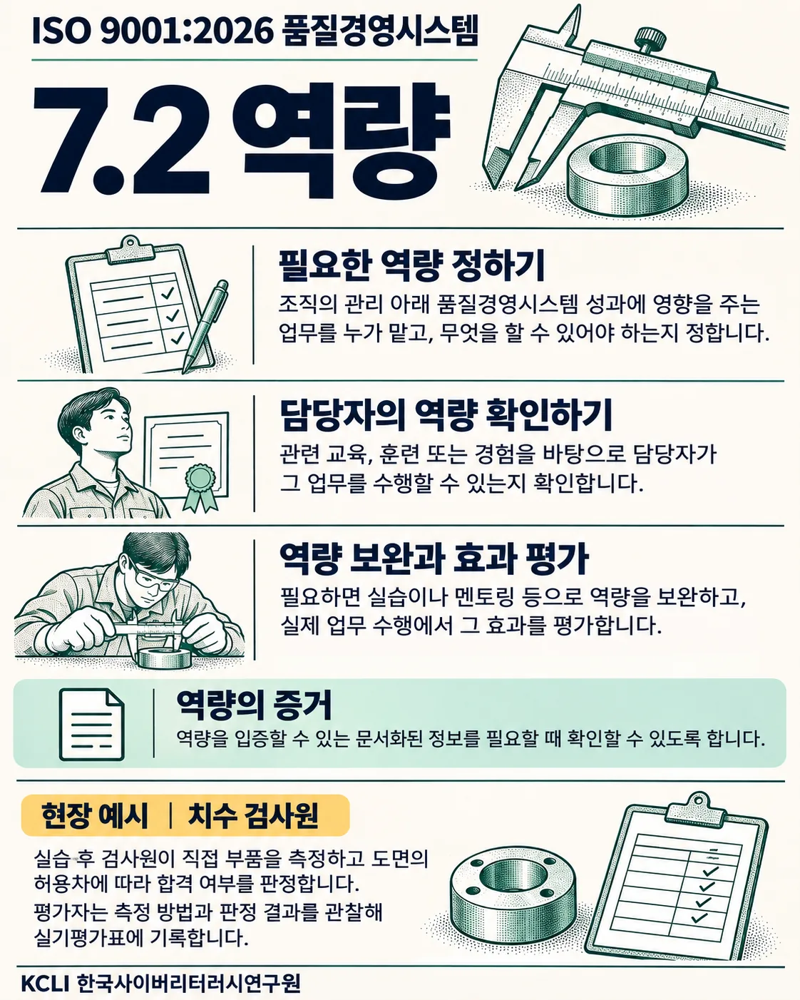

ISO 9001:2026 품질경영 학습자료
7.2 역량
역량은 지식과 기술을 적용해 의도한 결과를 낼 수 있는 능력입니다. 제7.2항은 조직의 관리 아래 품질경영시스템 성과에 영향을 주는 업무를 수행하는 사람에게 적용됩니다.
- 필요 역량 결정
- 담당자가 어떤 일을 할 수 있어야 하는지, 무엇을 보면 수행 수준을 판단할 수 있는지 정합니다.
- 역량 확인
- 관련 교육, 훈련 또는 경험을 근거로 담당자가 그 업무를 수행할 수 있는지 확인합니다.
- 보완 조치와 효과 평가
- 필요하면 실습·멘토링·업무 재배치 등의 조치를 합니다. 그 결과 기대한 수준으로 업무를 수행할 수 있게 되었는지 평가합니다.
- 증거 확보
- 평가한 업무, 기준, 결과를 담은 실기평가표 등 역량을 입증하는 적절한 문서화된 정보를 필요할 때 확인할 수 있도록 합니다.
적용 예시 · 치수 검사원
실습을 마친 검사원이 부품을 직접 측정하고, 도면의 허용차를 읽어 적합 여부를 판정합니다. 평가자는 측정 방법을 관찰하고 판정이 도면 기준과 일치하는지 확인한 뒤 두 결과를 실기평가표에 기록합니다.
심사 질문 · 이 검사원이 독립적으로 부품을 측정하고 적합 여부를 판정할 수 있음을 어떤 증거로 확인하셨습니까?
7.2 역량 인포그래픽 보기

4.4 터틀 다이어그램으로 보는 프로세스 접근법
프로세스 접근법은 입력이 활동을 거쳐 출력이 되고, 다음 업무가 그 출력을 어떻게 쓰는지 살펴보는 방법입니다. 터틀 다이어그램은 ISO 9001:2026 제4.4항을 설명할 때 선택할 수 있는 도구입니다. 거북이의 몸통을 가로질러 업무의 흐름을 읽고, 네 모서리에서 자원·책임·방법·성과를 확인합니다.
- 입력
- 고객 주문서, 제품 사양, 수량, 희망 납기
- 중심 활동 · 주문 검토
- 요구사항을 재고·생산 일정과 대조한 후 고객과 공급 조건을 확정합니다.
- 출력과 인계
- 고객에게 주문확인서를 보내고, 생산계획팀에 확정 사양·수량·납기를 전달합니다.
- 무엇으로? · 자원
- 주문관리시스템, 재고 현황, 생산 일정표
- 누가? · 책임과 권한
- 영업이 주문 검토를 주관하고 생산계획팀이 납기 가능 여부를 확인합니다.
- 어떻게? · 방법과 기준
- 불명확한 사양과 납기는 고객에게 확인한 뒤 확정합니다.
- 무엇으로 평가하는가? · 지표
- 같은 기간에 확정한 전체 주문 중 요구사항 누락으로 정정한 주문의 비율
주문 한 건을 추적해 보세요. 고객에게 보낸 주문확인서의 납기와 생산계획에 반영된 납기를 대조합니다. 날짜가 다르면 각각 어디에서 입력했는지 확인합니다. 두 팀이 같은 확정 주문을 참조하도록 인계 방식을 바꾼 뒤, 이후 주문에서 같은 오류가 줄었는지 확인합니다.